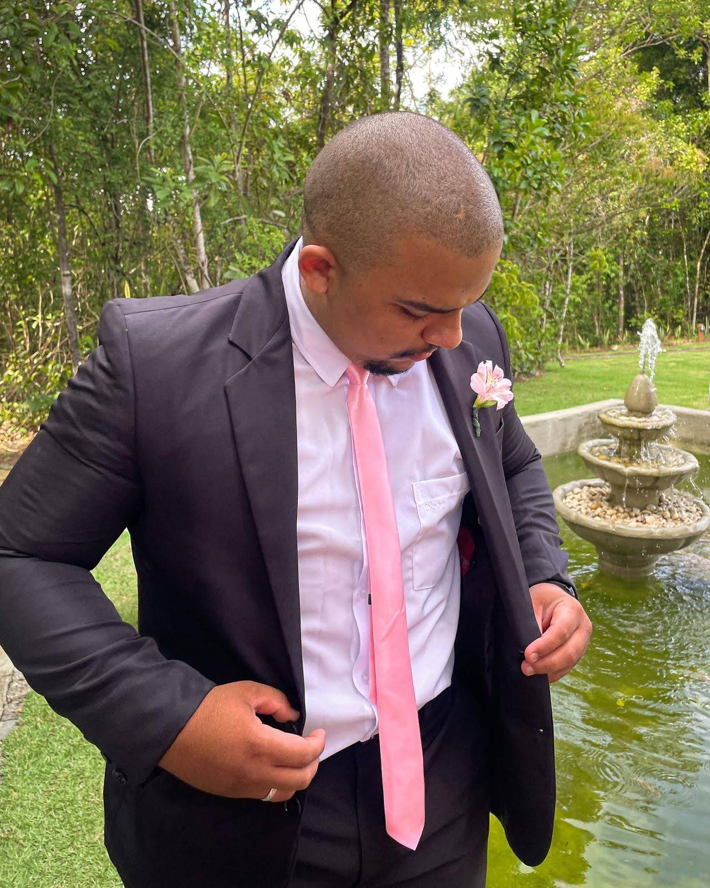

Anderson Henrique Luna Veloso

DADOS PESSOAIS
- Data de Nascimento: 11/08/2000
- Estado Civil: Solteiro
- Endereço: Rua Paulo de Arruda, 169. Recife - PE
CONTATO
- Telefone/Whatsapp: 81 98908-3029
- E-mail: Andersonhlv@gmail.com
- Linkedin: https://www.linkedin.com/in/anderSson-veloso-70ab15189/
- Github: https://github.com/AndersonVelos0
ÁREAS DE CONHECIMENTO
- Banco de dados: MYSQL
- Ling.Programação: Java, Python, C, C++;
- IDE'S: Eclipse, Netbeans, VS Code, Pycharm, Intellij;
- Desenv.Front-End: HTML5 e CSS3 - Básico;
- Frameworks: Springboot, Bootstrap.
FORMAÇÃO ACADÊMICA
- SENAC-Análise e Desenvolvimento de Sistemas - 2025.2.
- UFRPE - Lic. em Ciência da Computação - 2025.2.
- Tec.em Desenvolvimento de Sistemas - Concluído.
BOOTCAMP/CURSOS
- Java - Start Capgemini
- Python 3 - Udemy
- Java - Udemy
- Java Banco Inter - DIO
- Introdução à Ciência de Dados - ADA/LETS CODE
REFERÊNCIA DE MERCADO
- Nome: Fernando Vasconcellos;
Contato: +55 81 8162-2044;
Empresa: Telefonica Vivo Brasil;
Função: Coordenador O&M;
- Nome: Jansen Piani;
Contato: +55 81 8152-7163;
Empresa: Telefonica;
Função: Gestor Geral de Operações no Nordeste;
EXPERIÊNCIAS PROFISSIONAIS/ACADÊMICAS
-
Empresa:
Grupo Bradesco S.A
Ocupação:
Estagiário em Dados - Período: 22/08/2023 até o momento.
Atividades:
Desempenho um papel importante em ajudar a equipe a lidar com informações. Eu
trabalho coletando e organizando dados de diversas fontes, garantindo que estejam limpos e prontos
para
análise. Também colaboro em projetos, onde aprendo a aplicar métodos estatísticos simples para obter
insights. Estou aprendendo a usar ferramentas como Python e R para trabalhar com dados e criar
modelos
básicos. Além disso, ajudo a criar dashboards e relatórios visuais para comunicar nossas
descobertas.
-
Empresa:
Icomon Tecnologia S.A / Telefônica Vivo
Ocupação:
Assistente NOC II - Período: 01/06/2022 até 02/03/2023.
Atividades:
Efetuar testes em sites na área de telecomunicações através da Telefonica Vivo,
coordenar o acionamento de técnicos para averiguação de falhas afetando rede móvel no Nordeste do
Brasil, responsável por manter tratativas dos eventos atualizadas.
-
Projeto:
PET/FACEPE
Tema:
Pensamento Computacional - Estado de Pernambuco
Atividade:
Atuar no setor educacional levando o conhecimento do pensamento computacional
aos
alunos de escolas públicas do interior do estado, propiciado através do curso Técnico em
Desenvolvimento
de Sistemas.